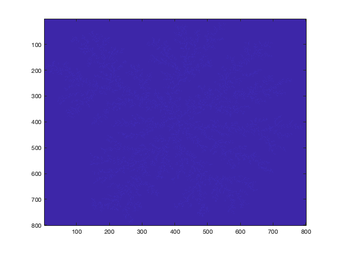
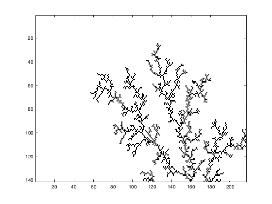
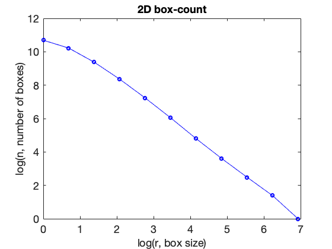
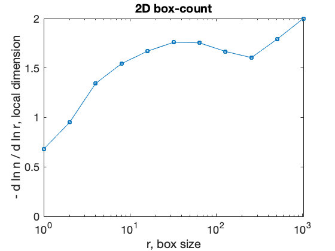
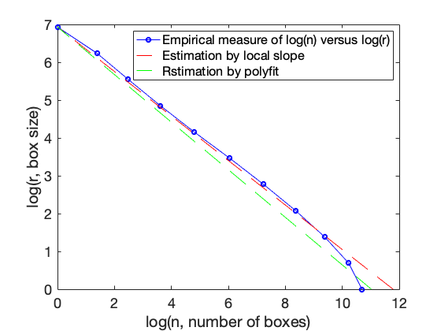

Fractals - Box Counting Method
In this lab you will learn nasic skills you need for analayzing fractals, including box counting method, manipulating images, thresholding,and a bit about regression and model comparison. Below are sample code and procedure.
Contents
Installation
Install boxcount.m under the Matlab folder by simply saving the code in that directory. Type "help boxcount" to see that it is now a recognized commant in Matlab.
Change working directory
2. Change directory to directory with your images. Use commands "pwd"= present working diretory, "cd.."=change directory to the one that is one level above, "ls"=list contents of file, "cd directory" to change directory that is one level below. And can use "Tab" to complete directory name after only first few letters.
Load and process image of interest
(1) loads image file, note that we assigned 'im1' variable to store our image.
im1 = imread('dla.gif');
(2) Look at image, the image might not look clear right now since since we haven't rescale the color yet.
image(im1);
pull out just part you want. here you can change the current section to the section you want to analyze. The last value 1 stand for the first layer of the color panel for the image, since the image is .gih, there is only 1 color panel (either black or white). If you're using a RGB colored image, then it should have 3 layer for the color panel: Red, Green and Blue.
i = im1(20:160, 25:240, 1);
Check what you pulled out:
image(i) % Sets full color scale for image: imagesc(~i); % Converts to gray scale: colormap gray;
Analyze the dimension of the image
run the command and generate the data. Note that here we are running the box counting method on the whole image, if you only want to analyze the section you selected, then you should replace im1 with i. Stores data in matrix for n=number of boxes, r=size/radius of boxes:
[n,r]=boxcount(im1);
look at data, x axis is 1st argument, y axis is 2nd argument:
h = figure('DefaultAxesFontSize',18); plot(log(r),log(n),'bo-') xlabel('log(r, box size)','FontSize',18) ylabel('log(n, number of boxes)','FontSize',18) title('2D box-count','FontSize',18)
Do 1st-degree linear polynimial fit to data to find slope:
pf=polyfit(log(r'),log(n'),1)
pf = -1.5922 11.3545
Look at local slope and notice region of stability, and think about how does this slope compare with the value calculated by polyfit above?
boxcount(im1, 'slope')
 %(Compare data with lines from two different estimates of slope. Which is better and why? plot(log(n),log(r),'bo-',log((r/r(end)).^(-1.7)),log(r),'r--',log((r/r(end)).^(-1.59)),log(r),'g--') ylabel('log(r, box size)') xlabel('log(n, number of boxes)') legend('Empirical measure of log(n) versus log(r)','Estimation by local slope','Rstimation by polyfit')